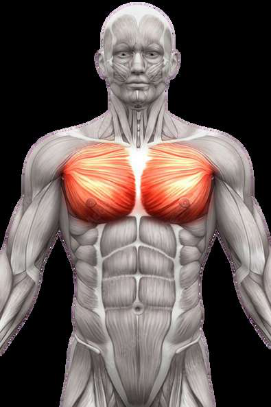
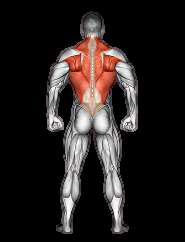
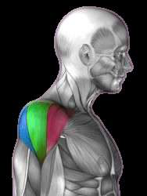
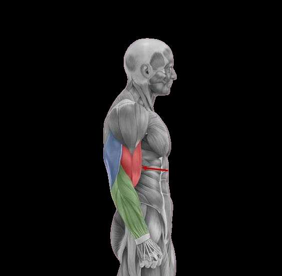
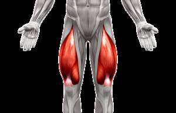
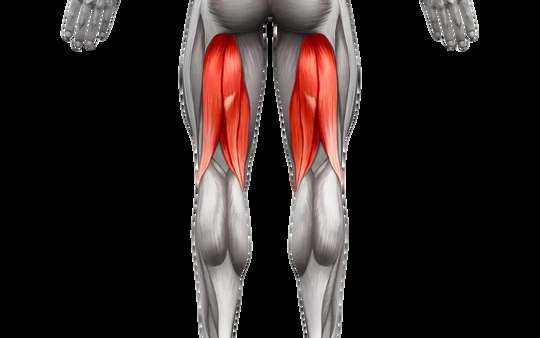
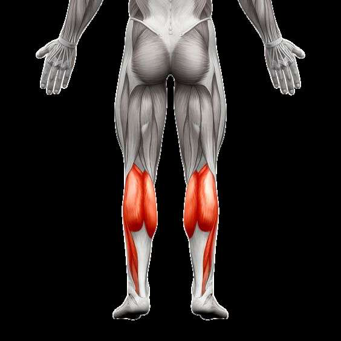

تعرف على كل مجموعة عضلية في جسمك بالتفصيل: تقسيماتها الداخلية، وظائفها، والتمارين الأمثل لاستهداف كل جزء منها. فهم التشريح العضلي هو الخطوة الأولى نحو تدريب ذكي وفعال.
اضغط على أي مجموعة عضلية للانتقال إلى تفاصيلها التشريحية الكاملة
تُعد عضلة الصدر (Pectoralis Major) من أكبر العضلات في الجزء العلوي من الجسم. وهي عضلة مروحية الشكل تغطي الجزء الأمامي من القفص الصدري. تلعب دورًا رئيسيًا في حركات الدفع الأفقي والعمودي، وهي مسؤولة عن تقريب الذراع (Adduction)، الدوران الداخلي للكتف، وثني الذراع أمام الجسم. تنقسم عضلة الصدر إلى ثلاثة أجزاء رئيسية، ولكل جزء تمارينه المخصصة التي تستهدفه بشكل أمثل.
الجزء العلوي من عضلة الصدر يرتبط بعظمة الترقوة (Clavicle). يُستهدف بشكل رئيسي من خلال تمارين الضغط على بنش مائل (Incline Bench Press) وتمارين التفتيح المائلة. تطوير هذا الجزء يمنح الصدر مظهرًا ممتلئًا ومتناسقًا من الأعلى، وهو من أصعب الأجزاء في النمو لدى كثير من المتدربين.
الجزء الأوسط والأكبر من عضلة الصدر، يرتبط بعظمة القص (Sternum). يُستهدف من خلال تمارين الضغط المستوي (Flat Bench Press) وتمارين التفتيح المستوية. هذا الجزء يمثل الكتلة الرئيسية للصدر ويمنحه العرض والسماكة. يُعتبر أسهل أجزاء الصدر في الاستهداف والتطوير.
الجزء السفلي من عضلة الصدر يُعطي الصدر شكله المحدد والمنحوت من الأسفل. يُستهدف بتمارين الضغط على بنش منحدر (Decline Bench Press) وتمارين الكابل من أعلى لأسفل. تطوير هذا الجزء يبرز الخط السفلي للصدر ويمنحه مظهرًا مربعًا ومنحوتًا.

عضلة الصدر - Pectoralis
عضلة الظهر - Back Musclesعضلات الظهر هي مجموعة عضلية ضخمة ومعقدة تُشكّل الجزء الخلفي من الجذع العلوي. تشمل عدة عضلات متداخلة أبرزها العضلة العريضة (Latissimus Dorsi)، شبه المنحرفة (Trapezius)، والعضلة الناصبة للعمود الفقري (Erector Spinae). تلعب عضلات الظهر دورًا محوريًا في حركات السحب، استقرار العمود الفقري، والحفاظ على القوام السليم. بناء ظهر قوي يُحسّن الأداء الرياضي ويقي من آلام أسفل الظهر.
يشمل عضلات الترابيز العلوية (Upper Trapezius) والعضلات المعينية (Rhomboids) التي تقع بين لوحي الكتف. يُستهدف من خلال تمارين التجديف العلوي (Face Pulls)، الشراجز (Shrugs)، وتمارين السحب العالي. تطوير الظهر العلوي يمنح مظهر السمك والكثافة من الخلف ويُحسّن وضعية الكتفين.
يشمل العضلة الناصبة للعمود الفقري (Erector Spinae) التي تمتد على طول العمود الفقري. يُستهدف بتمارين الديدلفت (Deadlift)، الهايبر إكستنشن (Hyperextensions)، وتمارين Good Morning. يُعد من أهم العضلات لاستقرار الجذع وحماية العمود الفقري، ويجب تدريبه بعناية لتجنب الإصابات.
العضلة العريضة الظهرية (Latissimus Dorsi) هي أعرض عضلة في الجسم وتمنح الجسم شكل حرف V المميز. تمتد من أسفل الظهر حتى الإبط. يُستهدفها بتمارين السحب الأمامي (Lat Pulldown)، العقلة (Pull-ups)، والتجديف بأنواعه. تطوير اللاتس يمنح العرض والضخامة للجزء العلوي من الجسم.
العضلة الدالية (Deltoid) هي عضلة مثلثية الشكل تغطي مفصل الكتف بالكامل. وهي المسؤولة عن رفع الذراع في جميع الاتجاهات وتعطي الكتف شكله المستدير المميز. تنقسم إلى ثلاثة رؤوس رئيسية: أمامي، جانبي، وخلفي. تدريب الأكتاف بشكل متوازن يمنح الجسم عرضًا وتناسقًا، ويحمي مفصل الكتف من الإصابات. تُعد الأكتاف من أكثر المفاصل حركية في الجسم، مما يستلزم تدريبها بعناية وتقنية صحيحة.
الرأس الأمامي للعضلة الدالية (باللون الأحمر في الصورة) مسؤول عن رفع الذراع أمام الجسم (Flexion) والدوران الداخلي. يُستهدف بتمارين الضغط العسكري (Overhead Press)، الرفعة الأمامية (Front Raise)، وتمارين ضغط الصدر المائل. غالبًا يكون هذا الجزء متطورًا بشكل كافٍ بسبب مشاركته في تمارين الصدر.
الرأس الجانبي (باللون الأخضر في الصورة) مسؤول عن رفع الذراع للجانب (Abduction) وهو ما يمنح الكتف عرضه المميز. يُستهدف بتمارين الرفع الجانبي (Lateral Raise) بالدمبل أو الكابل. يُعتبر من أهم أجزاء الكتف للحصول على مظهر الأكتاف العريضة المستديرة، ويحتاج لحجم تدريبي عالٍ للنمو الأمثل.
الرأس الخلفي (باللون الأزرق في الصورة) مسؤول عن سحب الذراع للخلف (Extension) والدوران الخارجي للكتف. يُستهدف بتمارين الفيس بول (Face Pull)، الرفعة الخلفية (Reverse Fly)، والتجديف العالي. غالبًا يكون هذا الجزء مُهملاً عند كثير من المتدربين، مما يسبب خللاً في توازن الكتف وقد يؤدي لإصابات.

أمامي | جانبي | خلفي
عضلات الذراع - Arm Musclesعضلات الذراع من أكثر العضلات وضوحًا في الجسم وتمثل رمزًا للقوة البدنية. تنقسم إلى ثلاث مجموعات رئيسية: البايسبس (ثنائية الرؤوس) في الجزء الأمامي، الترايسبس (ثلاثية الرؤوس) في الجزء الخلفي وتشكل ثلثي حجم الذراع، والسواعد التي تتحكم في حركة المعصم والأصابع. تطوير الذراعين يتطلب تدريب جميع هذه المجموعات بشكل متوازن للحصول على أذرع ضخمة ومتناسقة من جميع الزوايا.
العضلة ذات الرأسين (Biceps Brachii) تقع في الجزء الأمامي من الذراع العلوي وتتكون من رأسين: طويل وقصير. مسؤولة عن ثني المرفق (Elbow Flexion) وتدوير الساعد (Supination). تُستهدف بتمارين الكيرل بأنواعها: كيرل البار (Barbell Curl)، كيرل الدمبل (Dumbbell Curl)، والكيرل المركز (Concentration Curl). الرأس الطويل يُعطي الذروة (Peak) بينما القصير يُعطي العرض.
العضلة ذات الرؤوس الثلاثة (Triceps Brachii) تقع في الجزء الخلفي من الذراع وتُشكّل حوالي ثلثي حجم العضد. تتكون من ثلاثة رؤوس: طويل، جانبي، وداخلي. مسؤولة عن بسط المرفق (Elbow Extension). تُستهدف بتمارين التراي بوش داون (Tricep Pushdown)، الضغط الضيق (Close-Grip Press)، وتمارين الكسر خلف الرأس (Skull Crushers). تطويرها أساسي لمن يبحث عن حجم كبير للذراع.
مجموعة معقدة من العضلات الصغيرة في الساعد مسؤولة عن حركات المعصم والأصابع وقبضة اليد. تشمل عضلات الثني والبسط والانحراف الجانبي للمعصم. أبرزها عضلة العضدية الكعبرية (Brachioradialis). تُستهدف بتمارين كيرل المعصم (Wrist Curl)، كيرل المعصم العكسي (Reverse Wrist Curl)، وتمارين القبضة. سواعد قوية تُحسّن الأداء في جميع تمارين الجزء العلوي وتمنع ضعف القبضة.
عضلات الأفخاذ هي أقوى وأكبر مجموعة عضلية في الجسم بأكمله. تنقسم إلى مجموعتين رئيسيتين: العضلة رباعية الرؤوس (Quadriceps) في المقدمة والعضلة الخلفية (Hamstrings) في الجزء الخلفي من الفخذ. هذه العضلات مسؤولة عن المشي، الجري، القفز، وجميع حركات الجزء السفلي من الجسم. تدريب الأرجل بانتظام يعزز إفراز هرمون النمو والتستوستيرون بشكل أكبر من أي تمرين آخر، مما يدعم نمو الجسم بالكامل.
العضلة رباعية الرؤوس (Quadriceps) تتكون من أربعة رؤوس: المستقيمة الفخذية (Rectus Femoris)، المتسعة الوحشية (Vastus Lateralis)، المتسعة الأنسية (Vastus Medialis)، والمتسعة المتوسطة (Vastus Intermedius). مسؤولة عن بسط الركبة والمشي وصعود الدرج. تُستهدف بتمارين السكوات (Squats)، الليج بريس (Leg Press)، وتمارين بسط الركبة (Leg Extension). هي العضلة الأقوى في جسم الإنسان.
العضلات الخلفية للفخذ (Hamstrings) تتكون من ثلاث عضلات: ذات الرأسين الفخذية (Biceps Femoris)، نصف الوترية (Semitendinosus)، ونصف الغشائية (Semimembranosus). مسؤولة عن ثني الركبة وبسط الورك. تُستهدف بتمارين الديدلفت الروماني (Romanian Deadlift)، ثني الركبة (Leg Curl)، وتمارين الجلوت هام رايز. تطوير الهامسترينج أساسي لمنع إصابات الركبة وتحقيق التوازن العضلي في الساق.

فخذ أمامي - Quads
فخذ خلفي - Hamstrings
عضلة البطات - Calvesعضلات الساق السفلية (البطات) تقع في الجزء الخلفي من الساق أسفل الركبة. تتكون بشكل رئيسي من عضلتين: عضلة الساق الخلفية (Gastrocnemius) ذات الرأسين التي تُعطي البطة شكلها البارز، والعضلة النعلية (Soleus) التي تقع تحتها وتمنح الكثافة والعمق. هذه العضلات مسؤولة عن رفع الكعب (Plantarflexion) وهي ضرورية للمشي والجري والقفز والتوازن. تُعتبر من أصعب العضلات في النمو بسبب تركيبتها الليفية العالية في الألياف البطيئة.
العضلة ذات الرأسين في بطة الساق (Gastrocnemius) هي الأكثر بروزًا. تتكون من رأس داخلي (Medial) ورأس خارجي (Lateral). تعمل بشكل أساسي عند ثني الركبة ورفع الكعب معًا. تُستهدف بتمارين رفع البطات واقفًا (Standing Calf Raise) حيث تكون الركبة مفرودة. تُعطي البطة شكلها الماسي المميز عند التطور الكامل.
العضلة النعلية (Soleus) تقع أسفل عضلة الـ Gastrocnemius وتمتد من أسفل الركبة حتى وتر أخيل. تحتوي على نسبة عالية من الألياف البطيئة (Type I) مما يجعلها مقاومة للتعب. تُستهدف بشكل خاص بتمارين رفع البطات جالسًا (Seated Calf Raise) حيث تكون الركبة مثنية. تطويرها يُضيف عرضًا وكثافة للبطة خاصة عند النظر من الجانب.
حان الوقت لتطبيق هذه المعرفة! تصفح دليل التمارين الشامل واكتشف أفضل التمارين لكل مجموعة عضلية، أو استخدم حاسبة السعرات لتحديد احتياجاتك الغذائية لبناء العضلات.